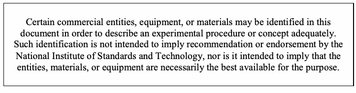
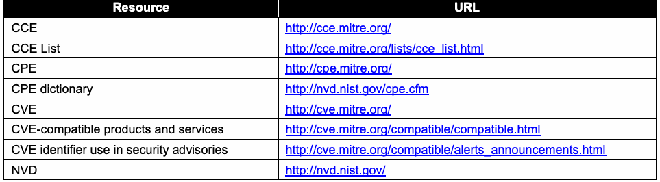

NIST SP 800-51 Rev. 1 日本語訳
英語タイトル : Guide to Using Vulnerability Naming Schemes日本語タイトル : 脆弱性命名スキームの利用ガイド
公開日 : 2011-02-25
原文URL : https://csrc.nist.gov/pubs/sp/800/51/r1/final
翻訳編集 : 自動生成（有志による非公式の日本語訳）, 原文取得日 : 2026-09-30, 訳文 : 107 / 107 ブロック
[要約] SP 800-51 Rev. 1 は、脆弱性の命名方式である CVE と CCE を使用するための推奨事項を示すガイドです。両方式の概要を紹介したうえで、これらの方式で生成される名称を使うエンドユーザー組織への推奨事項と、ソフトウェア開発者およびサービスプロバイダーへの推奨事項を、別の章で示します。脆弱性の識別と報告を共通の名称で行えるようにするため、利用組織とベンダーがこれらの命名方式をどう用いるべきかを示すことが目的です。
［NIST のロゴ。公的な標章のため、この非公式サイトには掲載していない。原本 PDF を参照。］
Special Publication 800-51 Revision 1
特別刊行物800-51 改訂1
Guide to Using Vulnerability Naming Schemes
脆弱性命名体系の利用ガイド
Recommendations of the National Institute of Standards and Technology
米国国立標準技術研究所の勧告
David Waltermire Karen Scarfone
David Waltermire、Karen Scarfone
Guide to Using Vulnerability Naming Schemes
脆弱性命名体系の利用ガイド
NIST Special Publication 800-51 Revision 1
NIST特別刊行物800-51 改訂1
Recommendations of the National Institute of Standards and Technology
米国国立標準技術研究所の勧告
David Waltermire Karen Scarfone
David Waltermire、Karen Scarfone
C O M P U T E R S E C U R I T Y
コンピュータセキュリティ
Computer Security Division Information Technology Laboratory National Institute of Standards and Technology Gaithersburg, MD 20899-8930
コンピュータセキュリティ部門 情報技術研究所 国立標準技術研究所 Gaithersburg, MD 20899-8930
February 2011
2011年2月
U.S. Department of Commerce
米国商務省
Gary Locke, Secretary
長官 Gary Locke
National Institute of Standards and Technology
国立標準技術研究所
Dr. Patrick D. Gallagher, Director
所長 Dr. Patrick D. Gallagher
Reports on Computer Systems Technology
コンピュータシステム技術に関する報告書
The Information Technology Laboratory (ITL) at the National Institute of Standards and Technology (NIST) promotes the U.S. economy and public welfare by providing technical leadership for the nation’s measurement and standards infrastructure. ITL develops tests, test methods, reference data, proof of concept implementations, and technical analysis to advance the development and productive use of information technology. ITL’s responsibilities include the development of technical, physical, administrative, and management standards and guidelines for the cost-effective security and privacy of sensitive unclassified information in Federal computer systems. This Special Publication 800-series reports on ITL’s research, guidance, and outreach efforts in computer security and its collaborative activities with industry, government, and academic organizations.
国立標準技術研究所（NIST）の情報技術研究所（ITL）は、国の測定・標準インフラストラクチャを技術面で主導し、米国経済と公共の福祉を促進する。ITLは、情報技術の開発および生産的な利用を進めるため、試験、試験方法、参照データ、概念実証実装および技術分析を開発する。ITLの責務には、連邦コンピュータシステムにおける機微な非機密情報の費用対効果に優れたセキュリティとプライバシーに関する技術、物理、管理、運用上の標準およびガイドラインの開発が含まれる。本特別刊行物800シリーズは、コンピュータセキュリティに関するITLの研究、指針、普及活動、および産業界、政府、学術機関との協力活動を報告する。
National Institute of Standards and Technology Special Publication 800-51 Revision 1 Natl. Inst. Stand. Technol. Spec. Publ. 800-51 rev. 1, 13 pages (Feb. 2011)
国立標準技術研究所 特別刊行物800-51 改訂1 Natl. Inst. Stand. Technol. Spec. Publ. 800-51 rev. 1、13ページ（2011年2月）
Certain commercial entities, equipment, or materials may be identified in this document in order to describe an experimental procedure or concept adequately. Such identification is not intended to imply recommendation or endorsement by the National Institute of Standards and Technology, nor is it intended to imply that the entities, materials, or equipment are necessarily the best available for the purpose.
原本PDFの抜粋画像

実験手順または概念を適切に説明するため、この文書では特定の商業事業体、機器または材料を挙げる場合がある。これらの記載は、国立標準技術研究所による推奨または推薦を意味するものではなく、また、記載された事業体、材料または機器が目的に必ずしも最適な入手可能品であることを意味するものでもない。
Acknowledgments
謝辞
The authors, David Waltermire of the National Institute of Standards and Technology (NIST) and Karen Scarfone of G2, Inc. wish to thank their colleagues who reviewed drafts of this document and contributed to its technical content, particularly John Banghart, Harold Booth, Tim Grance, Chris Johnson, and Murugiah Souppaya of NIST, and George Saylor of G2, Inc. The authors would also like to acknowledge Peter Mell and Tim Grance of NIST for authoring the original version of this publication, which was released in 2002.
著者である国立標準技術研究所（NIST）のDavid WaltermireおよびG2, Inc.のKaren Scarfoneは、本書の草稿をレビューし、技術的内容に貢献した同僚、とりわけNISTのJohn Banghart、Harold Booth、Tim Grance、Chris Johnson、Murugiah Souppaya、およびG2, Inc.のGeorge Saylorに感謝する。また、本刊行物の初版（2002年発行）を執筆したNISTのPeter MellおよびTim Granceにも謝意を表する。
Trademark Information
商標に関する情報
CVE is a registered trademark, and CCE and CPE are trademarks, of The MITRE Corporation.
CVEはThe MITRE Corporationの登録商標であり、CCEおよびCPEは同社の商標である。
All other names are registered trademarks or trademarks of their respective companies.
その他の名称は、それぞれの企業の登録商標または商標である。
Table of Contents
目次
1. Introduction — 1
1. はじめに — 1
1.1 Authority — 1
1.1 権限 — 1
1.2 Purpose and Scope — 1
1.2 目的および適用範囲 — 1
1.3 Audience — 1
1.3 対象読者 — 1
1.4 Document Structure — 1
1.4 文書の構成 — 1
2. Overview of Vulnerability Naming Schemes — 2
2. 脆弱性命名体系の概要 — 2
2.1 Common Vulnerabilities and Exposures (CVE) — 2
2.1 共通脆弱性識別子（CVE） — 2
2.2 Common Configuration Enumeration (CCE)5 — 3
2.2 共通構成列挙（CCE）5 — 3
3. Recommendations for End-User Organizations — 4
3. エンドユーザー組織への推奨事項 — 4
3.1 Product and Service Selection and Design — 4
3.1 製品およびサービスの選択と設計 — 4
3.2 Vulnerability Communications and Reporting — 4
3.2 脆弱性に関する連絡と報告 — 4
4. Recommendations for Software Developers and Service Providers — 6
4. ソフトウェア開発者およびサービスプロバイダーへの推奨事項 — 6
4.1 Name Creation — 6
4.1 名称の作成 — 6
4.2 Name Use — 6
4.2 名称の使用 — 6
Appendix A— Acronyms and Abbreviations ......................................................................A-1
付録A— 頭字語および略語 ......................................................................A-1
Appendix B— References ....................................................................................................B-1
付録B— 参考文献 ....................................................................................................B-1
List of Figures
図一覧
Figure 1. Example CVE Entry — 2
図1. CVEエントリの例 — 2
Figure 2. Example CCE Entry — 3
図2. CCEエントリの例 — 3
1. Introduction
1. はじめに
1.1 Authority
1.1 権限
The National Institute of Standards and Technology (NIST) developed this document in furtherance of its statutory responsibilities under the Federal Information Security Management Act (FISMA) of 2002, Public Law 107-347.
米国国立標準技術研究所（NIST）は、2002年連邦情報セキュリティ管理法（FISMA）、Public Law 107-347に基づく法定責任を遂行するため、本書を作成した。
NIST is responsible for developing standards and guidelines, including minimum requirements, for providing adequate information security for all agency operations and assets; but such standards and guidelines shall not apply to national security systems. This guideline is consistent with the requirements of the Office of Management and Budget (OMB) Circular A-130, Section 8b(3), “Securing Agency Information Systems,” as analyzed in A-130, Appendix IV: Analysis of Key Sections. Supplemental information is provided in A-130, Appendix III.
NISTは、すべての機関の業務および資産に適切な情報セキュリティを提供するため、最低要件を含む標準およびガイドラインを策定する責任を負う。ただし、これらの標準およびガイドラインは国家安全保障システムには適用されない。本ガイドラインは、行政管理予算局（OMB）通達A-130第8b(3)節「Securing Agency Information Systems」と整合しており、A-130付録IV「Analysis of Key Sections」において分析されている。補足情報はA-130付録IIIに記載されている。
This guideline has been prepared for use by Federal agencies. It may be used by nongovernmental organizations on a voluntary basis and is not subject to copyright, though attribution is desired.
本ガイドラインは連邦機関が使用するために作成された。非政府組織も任意で使用でき、著作権の対象ではないが、出典の明記が望ましい。
Nothing in this document should be taken to contradict standards and guidelines made mandatory and binding on Federal agencies by the Secretary of Commerce under statutory authority, nor should these guidelines be interpreted as altering or superseding the existing authorities of the Secretary of Commerce, Director of the OMB, or any other Federal official.
本書のいかなる記述も、法定権限に基づき商務長官が連邦機関に義務付け、拘束力を持たせた標準およびガイドラインに反すると解釈してはならない。また、本ガイドラインは、商務長官、OMB長官、その他の連邦政府職員が有する既存の権限を変更または置き換えるものと解釈してはならない。
1.2 Purpose and Scope
1.2 目的および適用範囲
The purpose of this document is to provide recommendations for using vulnerability naming schemes. The document covers two schemes: CVE and CCE. The document gives an introduction to both schemes and makes recommendations for end-user organizations on using the names produced by these schemes. The document also presents recommendations for software and service vendors on how they should use vulnerability names and naming schemes in their product and service offerings.
本書の目的は、脆弱性の命名方式を使用するための推奨事項を示すことである。本書では、CVEとCCEの2つの方式を扱う。両方式を紹介し、これらの方式で生成される名称をエンドユーザー組織が使用する際の推奨事項を示す。また、ソフトウェアおよびサービスのベンダーが、自社の製品およびサービスで脆弱性名と命名方式をどのように使用すべきかについても推奨事項を示す。
1.3 Audience
1.3 対象読者
The intended audience for this document is individuals who have responsibilities related to vulnerability management.
本書の対象読者は、脆弱性管理に関する責任を担う人々である。
1.4 Document Structure
1.4 文書の構成
The remainder of this document is organized into the following major sections and appendices:
本書の残りの部分は、次の主要な節および付録で構成される。
•Section 2 provides an overview of CVE and CCE.
•第2節では、CVEおよびCCEの概要を示す。
•Section 3 gives recommendations to end-user organizations on using CVE and CCE.
•第3節では、エンドユーザー組織がCVEおよびCCEを使用するための推奨事項を示す。
•Section 4 makes recommendations for how IT product and service vendors should adopt CVE and CCE within their product and service offerings.
•第4節では、IT製品およびサービスのベンダーが自社の製品・サービスにCVEおよびCCEを採用する方法を推奨する。
•Appendix A defines acronyms and abbreviations for the document.
•付録Aでは、本書で使用する頭字語および略語を定義する。
•Appendix B lists related resources.
•付録Bでは、関連資料を一覧する。
2. Overview of Vulnerability Naming Schemes
2. 脆弱性命名方式の概要
A vulnerability naming scheme is a systematic method for creating and maintaining a standardized dictionary of common names for a set of vulnerabilities in IT systems, such as software flaws in an operating system or security configuration issues in an application. The naming scheme ensures that each vulnerability entered into the dictionary has a unique name. Using standardized vulnerability naming schemes supports interoperability. Organizations typically have many tools for system security management that reference vulnerabilities—for example, vulnerability and patch management software, vulnerability assessment tools, antivirus software, and intrusion detection systems. If these tools do not use standardized names for vulnerabilities, it may not be clear that multiple tools are referencing the same vulnerabilities in their reports, and it may take extra time and resources to resolve these discrepancies and correlate the information. This lack of interoperability can cause delays and inconsistencies in security assessment, reporting, decision-making, and vulnerability remediation, as well as hampering communications both within organizations and between organizations. Use of standardized names also helps minimize confusion regarding which problem is being addressed, such as which vulnerabilities a new patch mitigates. This helps organizations to quickly identify the information they need, such as remediation information, when a new problem arises.
脆弱性命名方式とは、オペレーティングシステムのソフトウェア欠陥やアプリケーションのセキュリティ構成上の問題など、ITシステムに存在する一連の脆弱性について、共通名称の標準化された辞書を作成・維持するための体系的な方法である。この方式により、辞書に登録された各脆弱性に一意の名称が付与される。標準化された脆弱性命名方式を使用することで、相互運用性が向上する。組織では通常、脆弱性を参照するシステムセキュリティ管理ツールを多数使用している。例えば、脆弱性・パッチ管理ソフトウェア、脆弱性評価ツール、ウイルス対策ソフトウェア、侵入検知システムなどである。これらのツールが脆弱性に標準名称を使用していない場合、複数のツールが報告書で同じ脆弱性を参照しているかどうかが分かりにくくなり、不一致の解消や情報の相関分析に余分な時間と資源が必要となる。相互運用性の欠如は、セキュリティ評価、報告、意思決定、脆弱性の修正に遅延や不整合をもたらし、組織内および組織間のコミュニケーションも妨げる可能性がある。標準名称を使用すれば、例えば新しいパッチがどの脆弱性を緩和するかなど、どの問題に対処しているのかに関する混乱も抑えられる。新たな問題が生じた際に、修正情報など必要な情報を組織が迅速に特定する助けとなる。
This publication provides information and recommendations related to two commonly used vulnerability naming schemes: Common Vulnerabilities and Exposures (CVE), and Common Configuration Enumeration (CCE). Both are described in detail below.
本書では、広く使用されている2つの脆弱性命名方式、Common Vulnerabilities and Exposures（CVE）およびCommon Configuration Enumeration（CCE）に関する情報と推奨事項を示す。両方式の詳細は以下で説明する。
2.1 Common Vulnerabilities and Exposures (CVE)
2.1 Common Vulnerabilities and Exposures（CVE）
The CVE vulnerability naming scheme is for a dictionary of unique, common names for publicly known software flaws. CVE provides the following:
CVE脆弱性命名方式は、公知のソフトウェア欠陥に一意の共通名称を付与する辞書である。CVEは次を提供する。
•A comprehensive list of publicly known software flaws
•公知のソフトウェア欠陥の包括的な一覧
•A globally unique name to identify each vulnerability
•各脆弱性を識別するためのグローバルに一意な名称
•A basis for discussing priorities and risks of vulnerabilities
•脆弱性の優先順位およびリスクについて議論するための基盤
•A way for a user of disparate products and services to integrate vulnerability information
•異なる製品やサービスを利用するユーザーが、脆弱性情報を統合するための手段
A CVE vulnerability entry consists of a unique identifier number, a short description of the vulnerability, and references to public advisories on the vulnerability. Figure 1 shows an example.
CVEの脆弱性エントリは、一意の識別番号、脆弱性の簡潔な説明、および脆弱性に関する公開勧告への参照で構成される。図1に例を示す。
| CVE ID: | CVE-2000-0001 |
| Description: | RealMedia server allows remote attackers to cause a denial of service via a long ramgen request. |
| References: | BUGTRAQ: 19991222 RealMedia Server 5.0 Crasher (rmscrash.c) BID:888 URL:http:/ XF:realserver-ramgen-dos |
| CVE ID: | CVE-2000-0001 |
| 説明： | RealMediaサーバーでは、長いramgenリクエストを介してリモート攻撃者がサービス拒否を引き起こすことができる。 |
| 参照： | BUGTRAQ: 19991222 RealMedia Server 5.0 Crasher (rmscrash.c) BID:888 URL:http:/ XF:realserver-ramgen-dos |
Figure 1. Example CVE Entry
図1. CVEエントリの例
Working with researchers, The MITRE Corporation assigns CVE IDs to publicly known vulnerabilities in commercial and open source software. General information on CVE is available at http://cve.mitre.org/. The National Vulnerability Database (NVD), which is maintained by NIST, provides several ways of accessing CVE entries. NVD offers CVE search capabilities, as well as a variety of XML and RSS data feeds with CVE entries and supplemental information to support security automation technologies. NVD is publicly available at http://nvd.nist.gov/.
研究者と協力して、The MITRE Corporationは、商用ソフトウェアおよびオープンソースソフトウェアで公知となっている脆弱性にCVE IDを付与する。CVEの一般情報はhttp://cve.mitre.org/で入手できる。NISTが管理するNational Vulnerability Database（NVD）は、CVEエントリにアクセスする複数の方法を提供する。NVDはCVE検索機能に加え、セキュリティ自動化技術を支援するCVEエントリおよび補足情報を含む各種XML・RSSデータフィードを提供する。NVDはhttp://nvd.nist.gov/で一般公開されている。
The MITRE Corporation maintains information on the use of CVE. Vendors that include CVE identifiers in their security advisories are listed at http://cve.mitre.org/compatible/alerts_announcements.html. Products and services that have been reviewed and evaluated by the MITRE Corporation and determined to be “CVE-compatible”, which means that they meet a set of CVE requirements, are listed at http://cve.mitre.org/compatible/compatible.html.
The MITRE CorporationはCVEの利用に関する情報を管理している。セキュリティ勧告にCVE識別子を含めるベンダーは、http://cve.mitre.org/compatible/alerts_announcements.html に掲載されている。The MITRE Corporationによる審査・評価を受け、CVEの一連の要件を満たす「CVE互換」と判定された製品およびサービスは、http://cve.mitre.org/compatible/compatible.html に掲載されている。
2.2 Common Configuration Enumeration (CCE)5
2.2 共通構成列挙（CCE）5
The CCE5 vulnerability naming scheme is for a dictionary of names for software security configuration settings. Each type of security-related configuration issue is assigned a unique identifier to facilitate fast and accurate correlation of configuration data across multiple information sources and products.
CCE5の脆弱性命名方式は、ソフトウェアのセキュリティ構成設定名の辞書である。セキュリティ関連の構成問題の種類ごとに一意の識別子を割り当て、複数の情報源および製品間で構成データを迅速かつ正確に相関できるようにする。
There are five attributes in a CCE entry: a unique identifier number, a description of the configuration issue, logical parameters of the CCE, the associated technical mechanisms related to the CCE, and references to additional sources of information. Figure 2 provides an example of these attributes for a CCE5 entry for Windows XP.
CCEエントリには5つの属性がある。一意の識別番号、構成問題の説明、CCEの論理パラメータ、CCEに関連付けられた技術的メカニズム、および追加情報源への参照である。図2は、Windows XP向けCCE5エントリのこれらの属性の例を示す。
| CCE ID: | CCE-3108-8 |
| Description: | The correct service permissions for the Telnet service should be assigned. |
| Parameters: | (1) set of accounts (2) list of permissions |
| Technical Mechanisms: | (1) set via Security Templates (2) defined by Group Policy |
| References: | Listed at http:/ |
| CCE ID: | CCE-3108-8 |
| 説明： | Telnetサービスには適切なサービス権限を割り当てるべきである。 |
| パラメータ： | (1) アカウントの集合 (2) 権限の一覧 |
| 技術的メカニズム： | (1) Security Templatesで設定 (2) Group Policyで定義 |
| 参照： | http:/ |
Figure 2. Example CCE Entry
図2. CCEエントリの例
The MITRE Corporation maintains and publishes the lists of CCE names. The lists, and additional information on CCE, are available at http://cce.mitre.org/.
The MITRE CorporationはCCE名の一覧を管理し、公開している。一覧およびCCEに関する追加情報はhttp://cce.mitre.org/で入手できる。
3. Recommendations for End-User Organizations
3. エンドユーザー組織への推奨事項
This section provides recommendations for end-user organizations on how they should take advantage of the CVE and CCE specifications to improve their system security management. For all recommendations in this section involving an organization using CVE and CCE names, the organization should use the authoritative names; locations for downloading these are listed in Section 2.
本節では、エンドユーザー組織がCVEおよびCCEの仕様をどのように活用してシステムセキュリティ管理を改善すべきかを推奨する。本節のうち、組織によるCVE名およびCCE名の使用に関するすべての推奨事項について、組織は正式な名称を使用すべきである。これらのダウンロード先は第2節に記載されている。
Some of the recommendations in this section involve the Common Platform Enumeration (CPE) version 2.2 specification. CPE provides standardized, consistent names for referring to operating systems, hardware, and applications. CPE names are often used in conjunction with CVE and CCE names. Each CVE name and CCE name is related to one or more IT components, which can be expressed using CPE names. For example, a particular software flaw (identified by a CVE name) may affect seven products (identified by their CPE names). Using CPE names with CVE and CCE names further supports interoperability and standardization across products and services. The official CPE dictionary is available at http://nvd.nist.gov/cpe.cfm.
本節の推奨事項の一部は、Common Platform Enumeration（CPE）バージョン2.2仕様に関係する。CPEは、オペレーティングシステム、ハードウェアおよびアプリケーションを示すための標準化された一貫性のある名称を提供する。CPE名はCVE名およびCCE名と併用されることが多い。各CVE名およびCCE名は1つ以上のIT構成要素に関連し、CPE名を使って表すことができる。例えば、特定のソフトウェアの欠陥（CVE名で識別される）が7つの製品（それぞれCPE名で識別される）に影響する場合がある。CVE名およびCCE名とともにCPE名を使うことで、製品やサービス間の相互運用性および標準化がさらに促進される。公式CPE辞書はhttp://nvd.nist.gov/cpe.cfmで入手できる。
3.1 Product and Service Selection and Design
3.1 製品およびサービスの選定と設計
1.When evaluating IT products and services that use vulnerability names, such as for possible acquisition, organizations should take into consideration the products and services’ support for CVE and/or CCE (as appropriate). Most organizations use a variety of products and services to detect, track, and mitigate vulnerabilities. Using standardized vulnerability names across products and services makes it much easier and faster to correlate information and to aggregate data from many disparate sources into a unified interface, such as a security dashboard.
1.脆弱性名を使用するIT製品およびサービスを評価する際、例えば取得候補の評価において、組織は製品およびサービスがCVEおよび／またはCCE（該当する場合）をサポートしているかを考慮すべきである。多くの組織は脆弱性の検出、追跡、軽減にさまざまな製品やサービスを使用する。製品やサービス間で標準化された脆弱性名を用いると、情報の相関や、異なる多様な情報源からデータをセキュリティダッシュボードなどの統一インターフェースに集約する作業が、はるかに容易かつ迅速になる。
2.Organizations developing their own custom security software that will use vulnerability names should ensure that the software uses authoritative CVE and/or CCE names, as appropriate, and uses CPE names with them when indicating which IT products the CVE and CCE names apply to. Using CVE, CCE, and CPE names supports interoperability with other software and services.
2.脆弱性名を使用する独自のセキュリティソフトウェアを開発する組織は、そのソフトウェアが該当する正式なCVE名および／またはCCE名を使用するようにし、CVE名およびCCE名がどのIT製品に適用されるかを示す際には、それらとともにCPE名も使用するようにすべきである。CVE、CCEおよびCPE名を使用することで、他のソフトウェアやサービスとの相互運用性が支援される。
3.2 Vulnerability Communications and Reporting
3.2 脆弱性に関する連絡および報告
1.Organizations should use authoritative CVE and CCE names in their internal vulnerability assessment and reporting, including assessment reports, notifications to system owners of detected vulnerabilities, and alerts identifying the vulnerabilities being targeted by active exploits. Use of CVE and CCE names will help to minimize confusion regarding which vulnerability is being referenced and whether a particular vulnerability has been mitigated. Organizations should also use CPE names when indicating which IT products the vulnerabilities apply to.
1.組織は、内部の脆弱性評価および報告において正式なCVE名およびCCE名を使用すべきである。これには、評価報告書、検出した脆弱性についてシステム所有者に送る通知、ならびに実際のエクスプロイトが標的としている脆弱性を特定する警告が含まれる。CVE名およびCCE名を使用すると、どの脆弱性を指しているのか、また特定の脆弱性が軽減済みかどうかに関する混乱を最小限に抑えられる。脆弱性がどのIT製品に適用されるかを示す場合、組織はCPE名も使用すべきである。
2.Organizations should use authoritative CVE and CCE names in their external vulnerability communications, as well as the CPE names for the IT products that the vulnerabilities apply to. For example, communications to incident response teams should reference, when known, the CVE or CCE names of the vulnerabilities that are being exploited and the CPE names of the products that are being exploited. This ensures that incident communications precisely identify relevant vulnerabilities and affected products, enable correlation and integration of reports, and enable correlation with supplemental information residing in other data repositories. Another example is that organizations should use CVE and CCE names when communicating with vendors that support CVE and CCE names. Suppose that a vendor-supplied patch that purports to fix a vulnerability is defective; a statement to the vendor that a given CVE vulnerability remains after applying the patch conveys important information clearly and succinctly. Communications with vendors of scanning tools regarding false positives or false negatives will be clearer if the vulnerability is labeled by CVE or CCE name.
2.組織は、外部向けの脆弱性連絡でも正式なCVE名およびCCE名を使用し、脆弱性が適用されるIT製品のCPE名も用いるべきである。例えば、インシデント対応チームへの連絡では、判明している場合、悪用されている脆弱性のCVE名またはCCE名と、悪用されている製品のCPE名を記載すべきである。これにより、インシデント連絡で関連する脆弱性および影響を受ける製品が正確に特定され、報告の相関・統合が可能になり、他のデータリポジトリにある補足情報との相関も可能になる。また、CVE名およびCCE名をサポートするベンダーと連絡する場合にも、組織はCVE名およびCCE名を使用すべきである。脆弱性を修正するとされるベンダー提供のパッチに欠陥があるとする。パッチ適用後も特定のCVE脆弱性が残ることをベンダーに伝えれば、重要な情報を明確かつ簡潔に伝えられる。スキャンツールのベンダーに誤検知または見逃しについて連絡する場合も、脆弱性をCVE名またはCCE名で示せば、より明確になる。
3.As recommended in NIST SP 800-117 Revision 1, organizations should encourage security software vendors to incorporate support for CVE and CCE into their products, as well as encourage all software vendors to include authoritative CVE and CCE names in their product security advisories and other security-related documentation and communications, as well as to reference the CPE names for their products.
3.NIST SP 800-117 Revision 1で推奨されているように、組織はセキュリティソフトウェアベンダーに対し、製品へのCVEおよびCCEサポートの組み込みを奨励すべきである。また、すべてのソフトウェアベンダーに対し、製品のセキュリティ勧告、その他のセキュリティ関連文書および連絡に正式なCVE名およびCCE名を含め、製品のCPE名も参照するよう奨励すべきである。
4. Recommendations for Software Developers and Service Providers
4. ソフトウェア開発者およびサービスプロバイダーへの推奨事項
This section makes recommendations for how software developers and service providers should take advantage of CVE and CCE’s capabilities. This improves interoperability, thus increasing the efficiency of security management and improving the effectiveness of security operations. Also, as described in the introduction to Section 3, using CPE names when indicating which products CVE and CCE names apply to further supports interoperability and standardization.
本節では、ソフトウェア開発者およびサービスプロバイダーがCVEおよびCCEの機能をどのように活用すべきかを推奨する。これにより相互運用性が向上し、セキュリティ管理の効率が高まり、セキュリティ運用の有効性が向上する。また、第3節の導入で述べたように、CVE名およびCCE名がどの製品に適用されるかを示す際にCPE名を使うと、相互運用性と標準化がさらに促進される。
4.1 Name Creation
4.1 名称の作成
1.Software developers should participate in the CVE issuance processes to help ensure that CVEs provide the necessary information and are created in a timely manner, such as while planning a public vulnerability announcement or immediately after a vulnerability has been publicly announced. For more information on the CVE issuance process, see http://cve.mitre.org/cve/identifiers/index.html or contact cve@mitre.org.
1.ソフトウェア開発者は、CVEが必要な情報を提供し、適時に作成されるよう、CVE発行プロセスに参加すべきである。例えば、脆弱性を公表する計画時、または脆弱性の公表直後に参加する。CVE発行プロセスの詳細は、http://cve.mitre.org/cve/identifiers/index.html を参照するか、cve@mitre.org に問い合わせること。
2.Authors of CVE names should reference applicable vendor patch identification whenever possible.
2.CVE名の作成者は、可能な場合は常に、該当するベンダーのパッチ識別情報を参照すべきである。
3.Software developers are encouraged to work with the MITRE Corporation to establish unique CCE identifiers for their products’ security configuration settings. Basic information on this is available at http://cce.mitre.org/lists/creation_process.html. Software developers should contact the CCE Content Team at cce@mitre.org for more information on the process.
3.ソフトウェア開発者は、自社製品のセキュリティ構成設定に一意のCCE識別子を付与するため、MITRE Corporationと協力することが推奨される。この手順の基本情報は http://cce.mitre.org/lists/creation_process.html にある。ソフトウェア開発者は、この手順の詳細についてCCE Content Team（cce@mitre.org）に問い合わせるべきである。
4.2 Name Use
4.2 名称の使用
1.Software developers and service providers should incorporate support for CVE and CCE into their products and services that reference publicly known software vulnerabilities. Also, CPE names should be used when indicating which products the CVE and CCE names apply to.
1.ソフトウェア開発者およびサービスプロバイダーは、公知のソフトウェア脆弱性を参照する自社の製品やサービスに、CVEおよびCCEへの対応を組み込むべきである。また、CVE名およびCCE名がどの製品に適用されるかを示す際には、CPE名を使用すべきである。
2.Software developers and service providers should incorporate the appropriate authoritative CVE and/or CCE names in their security advisories and other vulnerability-related documentation and communications, as well as the CPE names that indicate which products the CVE and/or CCE names apply to. Using CVE, CCE, and CPE names supports the use of standardized security automation technologies, which rely on common vulnerability and product names, and ensures clarity when referencing a given vulnerability.
2.ソフトウェア開発者およびサービスプロバイダーは、セキュリティ勧告その他の脆弱性関連文書や連絡に、適切な正式なCVE名および／またはCCE名と、それらがどの製品に適用されるかを示すCPE名を含めるべきである。CVE、CCE、CPEの各名称を使用すると、共通の脆弱性名や製品名に依存する標準化されたセキュリティ自動化技術の利用が支援され、特定の脆弱性を参照する際の明確さも確保できる。
Appendix A—Acronyms and Abbreviations
付録A―略語一覧
Selected acronyms and abbreviations used in the publication are defined below.
本書で使用する主な略語を以下に示す。
| CCE | Common Configuration Enumeration |
| CPE | Common Platform Enumeration |
| CVE | Common Vulnerabilities and Exposures |
| FISMA | Federal Information Security Management Act |
| IT | Information Technology |
| ITL | Information Technology Laboratory |
| NIST | National Institute of Standards and Technology |
| NISTIR | National Institute of Standards and Technology Interagency Report |
| NVD | National Vulnerability Database |
| OMB | Office of Management and Budget |
| RSS | Really Simple Syndication |
| SP | Special Publication |
| URL | Uniform Resource Locator |
| XML | Extensible Markup Language |
| CCE | 共通構成列挙（Common Configuration Enumeration） |
| CPE | 共通プラットフォーム列挙（Common Platform Enumeration） |
| CVE | 共通脆弱性識別子（Common Vulnerabilities and Exposures） |
| FISMA | 連邦情報セキュリティ管理法（Federal Information Security Management Act） |
| IT | 情報技術（Information Technology） |
| ITL | 情報技術研究所（Information Technology Laboratory） |
| NIST | 米国国立標準技術研究所（National Institute of Standards and Technology） |
| NISTIR | 米国国立標準技術研究所省庁間報告（National Institute of Standards and Technology Interagency Report） |
| NVD | National Vulnerability Database（国家脆弱性データベース） |
| OMB | 行政管理予算局（Office of Management and Budget） |
| RSS | Really Simple Syndication（RSSフィード形式） |
| SP | 特別刊行物（Special Publication） |
| URL | Uniform Resource Locator（統一資源位置指定子） |
| XML | Extensible Markup Language（拡張可能なマークアップ言語） |
Appendix B—References
付録B―参考資料
This appendix lists references with additional information related to vulnerability naming schemes.
この付録では、脆弱性の命名スキームに関する追加情報を得られる参考資料を示す。
| Resource | URL |
| CCE | http://cce.mitre.org/ |
| CCE List | http:/ |
| CPE | http://cpe.mitre.org/ |
| CPE dictionary | http:/ |
| CVE | http://cve.mitre.org/ |
| CVE-compatible products and services | http:/ |
| CVE identifier use in security advisories | http:/ |
| NVD | http://nvd.nist.gov/ |
原本PDFの抜粋画像

| 資料 | URL |
| CCE | http://cce.mitre.org/ |
| CCE一覧 | http:/ |
| CPE | http://cpe.mitre.org/ |
| CPE辞書 | http:/ |
| CVE | http://cve.mitre.org/ |
| CVE互換製品およびサービス | http:/ |
| セキュリティ勧告におけるCVE識別子の使用 | http:/ |
| NVD | http://nvd.nist.gov/ |